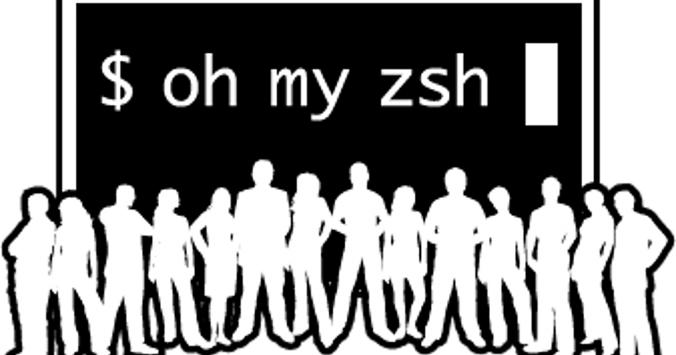

01. 工具定位：它到底是什么？

Oh-My-Codex (OMX) 并非新的大模型，而是为OpenAI Codex CLI打造的上层编排框架，为其注入工程化的灵魂与调度能力，实现从单一工具到智能协作系统的跨越。

💡 经典类比：如同 Oh My Zsh 之于原生 Zsh
它不替换底层的核心计算能力，而是在外部构建了一套强大的调度与增强层。通过赋予 AI 多智能体协作、任务持久记忆、标准化研发流水线与并行处理能力，让 AI 编程从“单兵作战”的脚本工具，升级为具备团队协作能力的“自主开发团队”。
⚠️ 原生 Codex CLI 的核心短板
• 单一会话无记忆，处理长周期项目时上下文极易丢失 • 缺乏标准化约束，任务执行方向易“跑偏” • 仅支持串行执行，无法调度多智能体并行解决复杂问题
🚀 OMX 带来的工程化重构
• 为原生 Codex 植入“记忆系统”与“任务规划大脑” • 建立标准化的研发流水线，确保产出的规范性与可维护性 • 实现多智能体并行调度，像真正的开发团队一样协同工作